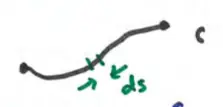
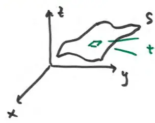

17.6 Surface Integrals (part 1)
line integral: \(\int_C f(x, y, z) ds\)
accumulation of \(f(x, y, z)\) along a curve \(C\) parametrized

surface integral: accumulation of \(f(x, y, z)\) all over a surface \(S\) (capital S)

tiny patch of the surface \(S\)
call this \(dS\)
(capital S)
the total accumulation over this surface looks like
\[ \iint_S f(x, y, z) dS \]